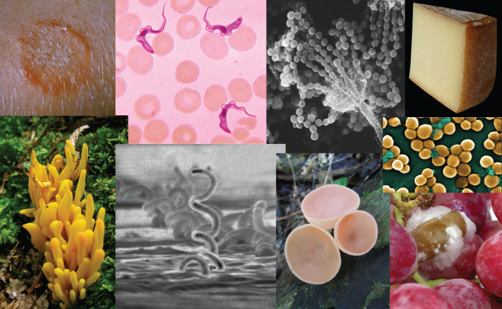
Until the late twentieth century, scientists most commonly grouped living things into five kingdoms—animals, plants, fungi, protists, and bacteria—based on several criteria, such as absence or presence of a nucleus and other membrane-bound organelles, absence or presence of cell walls, multicellularity, and mode of nutrition. In the late twentieth century, the pioneering work of Carl Woese and others compared nucleotide sequences of small-subunit ribosomal RNA (SSU rRNA), which resulted in a dramatically different way to group organisms on Earth. Based on differences in the structure of cell membranes and in rRNA, Woese and his colleagues proposed that all life on Earth evolved along three lineages, called domains. The three domains are called Bacteria, Archaea, and Eukarya.
Two of the three domains—Bacteria and Archaea—are prokaryotic, meaning that they lack both a nucleus and true membrane-bound organelles. However, they are now considered, on the basis of membrane structure and rRNA, to be as different from each other as they are from the third domain, the Eukarya. Prokaryotes were the first inhabitants on Earth, perhaps appearing approximately 3.9 billion years ago. Today they are ubiquitous—inhabiting the harshest environments on the planet, from boiling hot springs to permanently frozen environments in Antarctica, as well as more benign environments such as compost heaps, soils, ocean waters, and the guts of animals (including humans). The Eukarya include the familiar kingdoms of animals, plants, and fungi. They also include a diverse group of kingdoms formerly grouped together as protists.
- 13.1 Prokaryotic Diversity
- Describe the evolutionary history of prokaryotes
- Describe the basic structure of a typical prokaryote
- Identify bacterial diseases that caused historically important plagues and epidemics
- Describe the uses of prokaryotes in food processing and bioremediation
- 13.2 Eukaryotic Origins
- Describe the endosymbiotic theory
- Explain the origin of mitochondria and chloroplasts
- 13.3 Protists
- Describe the main characteristics of protists
- Describe important pathogenic species of protists
- Describe the roles of protists as food sources and as decomposers
- 13.4 Fungi
- List the characteristics of fungi
- Describe fungal parasites and pathogens of plants and infections in humans
- Describe the importance of fungi to the environment
- Summarize the beneficial role of fungi in food and beverage preparation and in the chemical and pharmaceutical industry
| # | Lesson | Key Concepts | Source |
|---|---|---|---|
| 1 | Prokaryotic Diversity — Structure & Classification | Three domains, Archaea (extremophiles, methanogens, halophiles, thermophiles), Bacteria, microbial mats, prokaryotic morphology (cocci, bacilli, spirilla), cell structure (cell wall, Gram positive/negative, capsule, flagella, pili, biofilms) | CB 13.1 (pt. 1) |
| 2 | Prokaryotic Diversity — Impact on Life | Pathogenic prokaryotes (MRSA, E. coli, foodborne illness), antibiotics & antibiotic resistance, beneficial prokaryotes (nitrogen fixation, food production, bioremediation, biotech applications) | CB 13.1 (pt. 2) |
| 3 | Eukaryotic Origins | Endosymbiotic theory, mitochondria from alpha-proteobacteria, chloroplasts from cyanobacteria, evidence for endosymbiosis, membrane infolding hypothesis | CB 13.2 |
| 4 | Protists | Protist characteristics, diversity, ecological roles, pathogenic protists (malaria, trypanosomes), protists as food sources and decomposers | CB 13.3 |
| 5 | Fungi | Fungal characteristics, reproduction, ecology, fungal parasites & pathogens, mycorrhizae, lichens, fungi in food & industry | CB 13.4 |
| 6 | Practice Test | All topics — comprehensive assessment | All |
| Standard | Description | Lessons |
|---|---|---|
| BIO.8a | Classification of organisms using physical characteristics, body structures, and behavior | 1, 2, 3, 4, 5 |
| BIO.8b | How evolution contributes to the diversity of life | 1, 2, 3, 4, 5 |
| BIO.8c | Use of phylogenetic trees to show evolutionary relationships | 1, 3 |
- Describe the evolutionary history of prokaryotes
- Describe the basic structure of a typical prokaryote
Prokaryotes are present everywhere. They cover every imaginable surface where there is sufficient moisture, and they live on and inside of other living things. There are more prokaryotes inside and on the exterior of the human body than there are human cells in the body. Some prokaryotes thrive in environments that are inhospitable for most other living things. Prokaryotes recycle nutrients—essential substances (such as carbon and nitrogen)—and they drive the evolution of new ecosystems, some of which are natural while others are man-made. Prokaryotes have been on Earth since long before multicellular life appeared.
The advent of DNA sequencing provided immense insight into the relationships and origins of prokaryotes that were not possible using traditional methods of classification. A major insight identified two groups of prokaryotes that were found to be as different from each other as they were from eukaryotes. This recognition of prokaryotic diversity forced a new understanding of the classification of all life and brought us closer to understanding the fundamental relationships of all living things, including ourselves.
When and where did life begin? What were the conditions on Earth when life began? Prokaryotes were the first forms of life on Earth, and they existed for billions of years before plants and animals appeared. Earth is about 4.54 billion years old. This estimate is based on evidence from the dating of meteorite material, since surface rocks on Earth are not as old as Earth itself. Most rocks available on Earth have undergone geological changes that make them younger than Earth itself. Some meteorites are made of the original material in the solar disk that formed the objects of the solar system, and they have not been altered by the processes that altered rocks on Earth. Thus, the age of meteorites is a good indicator of the age of the formation of Earth. The original estimate of 4.54 billion years was obtained by Clair Patterson in 1956. His meticulous work has since been corroborated by ages determined from other sources, all of which point to an Earth age of about 4.54 billion years.
Early Earth had a very different atmosphere than it does today. Evidence indicates that during the first 2 billion years of Earth's existence, the atmosphere was anoxic, meaning that there was no oxygen. Therefore, only those organisms that can grow without oxygen—anaerobic organisms—were able to live. Organisms that convert solar energy into chemical energy are called phototrophs. Phototrophic organisms that required an organic source of carbon appeared within one billion years of the formation of Earth. Then, cyanobacteria, also known as blue-green algae, evolved from these simple phototrophs one billion years later. Cyanobacteria are able to use carbon dioxide as a source of carbon. Cyanobacteria (Figure 13.2) began the oxygenation of the atmosphere. The increase in oxygen concentration allowed the evolution of other life forms.
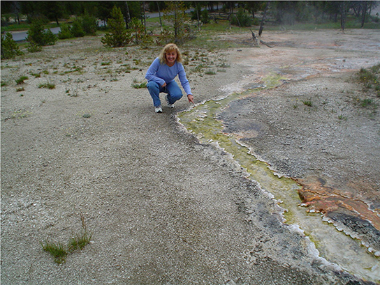
Before the atmosphere became oxygenated, the planet was subjected to strong radiation; thus, the first organisms would have flourished where they were more protected, such as in ocean depths or beneath the surface of Earth. At this time, too, strong volcanic activity was common on Earth, so it is likely that these first organisms—the first prokaryotes—were adapted to very high temperatures. These are not the typical temperate environments in which most life flourishes today; thus, we can conclude that the first organisms that appeared on Earth likely were able to withstand harsh conditions.
Microbial mats may represent the earliest forms of life on Earth, and there is fossil evidence of their presence, starting about 3.5 billion years ago. A microbial mat is a large biofilm, a multi-layered sheet of prokaryotes (Figure 13.3a), including mostly bacteria, but also archaea. Microbial mats are a few centimeters thick, and they typically grow on moist surfaces. Their various types of prokaryotes carry out different metabolic pathways, and for this reason, they reflect various colors. Prokaryotes in a microbial mat are held together by a gummy-like substance that they secrete.
The first microbial mats likely obtained their energy from hydrothermal vents. A hydrothermal vent is a fissure in Earth's surface that releases geothermally heated water. With the evolution of photosynthesis about 3 billion years ago, some prokaryotes in microbial mats came to use a more widely available energy source—sunlight—whereas others were still dependent on chemicals from hydrothermal vents for food.
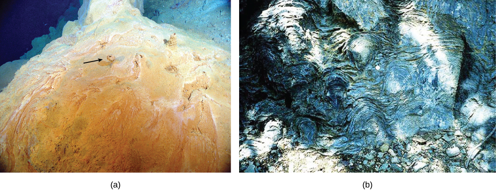
Fossilized microbial mats represent the earliest record of life on Earth. A stromatolite is a sedimentary structure formed when minerals are precipitated from water by prokaryotes in a microbial mat (Figure 13.3b). Stromatolites form layered rocks made of carbonate or silicate. Although most stromatolites are artifacts from the past, there are places on Earth where stromatolites are still forming. For example, living stromatolites have been found in the Anza-Borrego Desert State Park in San Diego County, California. Efforts to understand the earliest microbial mats may also have implications on the search for life elsewhere. Nora Noffke, who identified many of the features used in dating and categorizing microbially produced sedimentary structures, emphasizes that similar formations could be used to find evidence of life on Mars. When analyzing photos taken by the NASA Curiosity rover, Noffke showcased the similarities between fossilized microbial mats found on the two planets.
Some prokaryotes are able to thrive and grow under conditions that would kill a plant or animal. Bacteria and archaea that grow under extreme conditions are called extremophiles, meaning "lovers of extremes." Extremophiles have been found in extreme environments of all kinds, including the depths of the oceans, hot springs, the Arctic and the Antarctic, very dry places, deep inside Earth, harsh chemical environments, and high radiation environments. Extremophiles give us a better understanding of prokaryotic diversity and open up the possibility of the discovery of new therapeutic drugs or industrial applications. They have also opened up the possibility of finding life in other places in the solar system, which have harsher environments than those typically found on Earth. Many of these extremophiles cannot survive in moderate environments.
Until a couple of decades ago, microbiologists thought of prokaryotes as isolated entities living apart. This model, however, does not reflect the true ecology of prokaryotes, most of which prefer to live in communities where they can interact. A biofilm is a microbial community held together in a gummy-textured matrix, consisting primarily of polysaccharides secreted by the organisms, together with some proteins and nucleic acids. Biofilms grow attached to surfaces. Some of the best-studied biofilms are composed of prokaryotes, although fungal biofilms have also been described.
Biofilms are present almost everywhere. They cause the clogging of pipes and readily colonize surfaces in industrial settings. They have played roles in recent, large-scale outbreaks of bacterial contamination of food. Biofilms also colonize household surfaces, such as kitchen counters, cutting boards, sinks, and toilets.
Interactions among the organisms that populate a biofilm, together with their protective environment, make these communities more robust than are free-living, or planktonic, prokaryotes. Overall, biofilms are very difficult to destroy, because they are resistant to many of the common forms of sterilization.
There are many differences between prokaryotic and eukaryotic cells. However, all cells have four common structures: a plasma membrane that functions as a barrier for the cell and separates the cell from its environment; cytoplasm, a jelly-like substance inside the cell; genetic material (DNA and RNA); and ribosomes, where protein synthesis takes place. Prokaryotes come in various shapes, but many fall into three categories: cocci (spherical), bacilli (rod-shaped), and spirilla (spiral-shaped) (Figure 13.4).
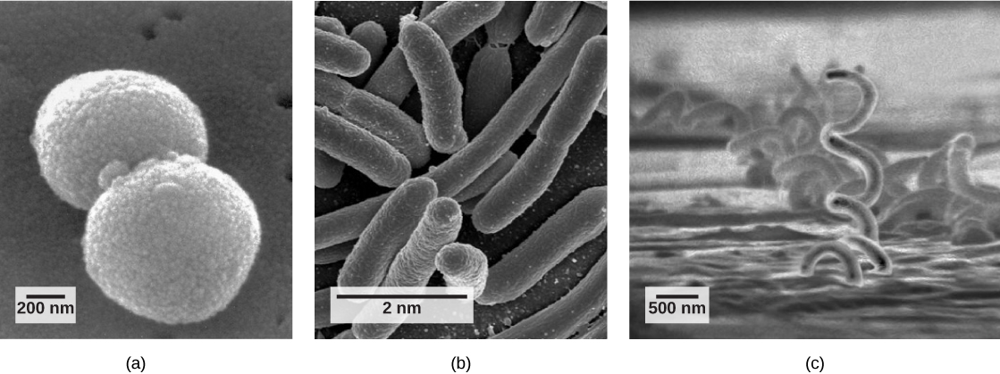
Recall that prokaryotes (Figure 13.5) are unicellular organisms that lack organelles surrounded by membranes. Therefore, they do not have a nucleus but instead have a single chromosome—a piece of circular DNA located in an area of the cell called the nucleoid. Most prokaryotes have a cell wall lying outside the plasma membrane. The composition of the cell wall differs significantly between the domains Bacteria and Archaea (and their cell walls also differ from the eukaryotic cell walls found in plants and fungi.) The cell wall functions as a protective layer and is responsible for the organism's shape. Some other structures are present in some prokaryotic species, but not in others. For example, the capsule found in some species enables the organism to attach to surfaces and protects it from dehydration. Some species may also have flagella (singular, flagellum) used for locomotion, and pili (singular, pilus) used for attachment to surfaces and to other bacteria for conjugation. Plasmids, which consist of small, circular pieces of DNA outside of the main chromosome, are also present in many species of bacteria.
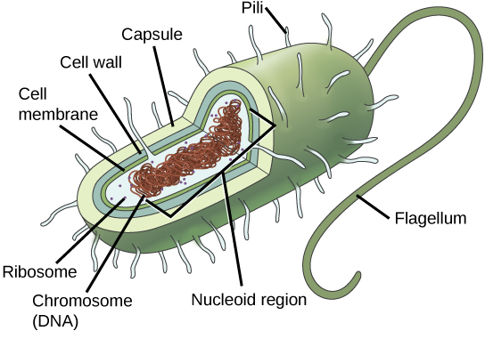
Both Bacteria and Archaea are types of prokaryotic cells. They differ in the lipid composition of their cell membranes and in the characteristics of their cell walls. Both types of prokaryotes have the same basic structures, but these are built from different chemical components that are evidence of an ancient separation of their lineages. The archaeal plasma membrane is chemically different from the bacterial membrane; some archaeal membranes are lipid monolayers instead of phosopholipid bilayers.
The cell wall is a protective layer that surrounds some prokaryotic cells and gives them shape and rigidity. It is located outside the cell membrane and prevents osmotic lysis (bursting caused by increasing volume). The chemical compositions of the cell walls vary between Archaea and Bacteria, as well as between bacterial species. Bacterial cell walls contain peptidoglycan, composed of polysaccharide chains cross-linked to peptides. Bacteria are divided into two major groups: Gram-positive and Gram-negative, based on their reaction to a procedure called Gram staining. The different bacterial responses to the staining procedure are caused by cell wall structure. Gram-positive organisms have a thick wall consisting of many layers of peptidoglycan. Gram-negative bacteria have a thinner cell wall composed of a few layers of peptidoglycan and additional structures, surrounded by an outer membrane (Figure 13.6).
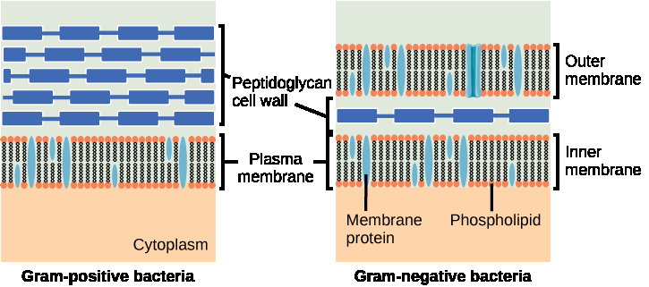
Archaeal cell walls do not contain peptidoglycan. There are four different types of archaeal cell walls. One type is composed of pseudopeptidoglycan. The other three types of cell walls contain polysaccharides, glycoproteins, and surface-layer proteins known as S-layers.
Reproduction in prokaryotes is primarily asexual and takes place by binary fission. Recall that the DNA of a prokaryote exists usually as a single, circular chromosome. Prokaryotes do not undergo mitosis. Rather, the chromosome loop is replicated, and the two resulting copies attached to the plasma membrane move apart as the cell grows in a process called binary fission. The prokaryote, now enlarged, is pinched inward at its equator, and the two resulting cells, which are clones, separate. Binary fission does not provide an opportunity for genetic recombination, but prokaryotes can alter their genetic makeup in three ways.
Binary fission as a way of reproduction does not provide an opportunity for genetic recombination and increased genetic variability. However, prokaryotes can alter their genetic makeup by three mechanisms of obtaining exogenous DNA. In a process called transformation, the cell takes in DNA found in its environment that is shed by other prokaryotes, alive or dead. A pathogen is an organism that causes a disease. If a nonpathogenic bacterium takes up DNA from a pathogen and incorporates the new DNA in its own chromosome, it too may become pathogenic. In transduction, bacteriophages, the viruses that infect bacteria, move DNA from one bacterium to another. Archaea have a different set of viruses that infect them and translocate genetic material from one individual to another. During conjugation, DNA is transferred from one prokaryote to another by means of a pilus that brings the organisms into contact with one another. The DNA transferred is usually a plasmid, but parts of the chromosome can also be moved.
Cycles of binary fission can be very rapid, on the order of minutes for some species. This short generation time coupled with mechanisms of genetic recombination result in the rapid evolution of prokaryotes, allowing them to respond to environmental changes (such as the introduction of an antibiotic) very quickly.
Prokaryotes are metabolically diverse organisms. Prokaryotes fill many niches on Earth, including being involved in nutrient cycles such as the nitrogen and carbon cycles, decomposing dead organisms, and growing and multiplying inside living organisms, including humans. Different prokaryotes can use different sources of energy to assemble macromolecules from smaller molecules. Phototrophs obtain their energy from sunlight. Chemotrophs obtain their energy from chemical compounds.
Describe the three domains of life and explain why Bacteria and Archaea are classified separately. Then compare Gram-positive and Gram-negative bacteria and explain three ways prokaryotes can obtain new genetic material.
- Identify bacterial diseases that caused historically important plagues and epidemics
- Describe the uses of prokaryotes in food processing and bioremediation
Devastating pathogen-borne diseases and plagues, both viral and bacterial in nature, have affected and continue to affect humans. It is worth noting that all pathogenic prokaryotes are Bacteria; there are no known pathogenic Archaea in humans or any other organism. Pathogenic organisms evolved alongside humans. In the past, the true cause of these diseases was not understood, and some cultures thought that diseases were a spiritual punishment or were mistaken about material causes. Over time, people came to realize that staying apart from afflicted persons, improving sanitation, and properly disposing of the corpses and personal belongings of victims of illness reduced their own chances of getting sick.
There are records of infectious diseases as far back as 3,000 B.C. A number of significant pandemics caused by Bacteria have been documented over several hundred years. Some of the largest pandemics led to the decline of cities and cultures. Many were zoonoses that appeared with the domestication of animals, as in the case of tuberculosis. A zoonosis is a disease that infects animals but can be transmitted from animals to humans.
Infectious diseases remain among the leading causes of death worldwide. Their impact is less significant in many developed countries, but they are important determiners of mortality in developing countries. The development of antibiotics did much to lessen the mortality rates from bacterial infections, but access to antibiotics is not universal, and the overuse of antibiotics has led to the development of resistant strains of bacteria. Public sanitation efforts that dispose of sewage and provide clean drinking water have done as much or more than medical advances to prevent deaths caused by bacterial infections.
In 430 B.C., the plague of Athens killed one-quarter of the Athenian troops that were fighting in the Great Peloponnesian War. The disease killed a quarter of the population of Athens in over 4 years and weakened Athens' dominance and power. The source of the plague may have been identified recently when researchers from the University of Athens were able to analyze DNA from teeth recovered from a mass grave. The scientists identified nucleotide sequences from a pathogenic bacterium that causes typhoid fever.
From 541 to 750 A.D., an outbreak called the plague of Justinian (likely a bubonic plague) eliminated, by some estimates, one-quarter to one-half of the human population. The population in Europe declined by 50 percent during this outbreak. Bubonic plague would decimate Europe more than once.
One of the most devastating pandemics was the Black Death (1346 to 1361), which is believed to have been another outbreak of bubonic plague caused by the bacterium Yersinia pestis. This bacterium is carried by fleas living on black rats. The Black Death reduced the world's population from an estimated 450 million to about 350 to 375 million. Bubonic plague struck London hard again in the mid-1600s. There are still approximately 1,000 to 3,000 cases of plague globally each year. Although contracting bubonic plague before antibiotics meant almost certain death, the bacterium responds to several types of modern antibiotics, and mortality rates from plague are now very low.
Over the centuries, Europeans developed resistance to many infectious diseases. However, European conquerors brought disease-causing bacteria and viruses with them when they reached the Western hemisphere, triggering epidemics that completely devastated populations of Native Americans (who had no natural resistance to many European diseases).
The word antibiotic comes from the Greek anti, meaning "against," and bios, meaning "life." An antibiotic is an organism-produced chemical that is hostile to the growth of other organisms. Today's news and media often address concerns about an antibiotic crisis. Are antibiotics that were used to treat bacterial infections easily treatable in the past becoming obsolete? Are there new "superbugs"—bacteria that have evolved to become more resistant to our arsenal of antibiotics? Is this the beginning of the end of antibiotics? All of these questions challenge the healthcare community.
One of the main reasons for resistant bacteria is the overuse and incorrect use of antibiotics, such as not completing a full course of prescribed antibiotics. The incorrect use of an antibiotic results in the natural selection of resistant forms of bacteria. The antibiotic kills most of the infecting bacteria, and therefore only the resistant forms remain. These resistant forms reproduce, resulting in an increase in the proportion of resistant forms over non-resistant ones.
Another problem is the excessive use of antibiotics in livestock. The routine use of antibiotics in animal feed promotes bacterial resistance as well. In the United States, 70 percent of the antibiotics produced are fed to animals. The antibiotics are not used to prevent disease, but to enhance production of their products.
Staphylococcus aureus, often called "staph," is a common bacterium that can live in and on the human body, which usually is easily treatable with antibiotics. A very dangerous strain, however, has made the news over the past few years (Figure 13.7). This strain, methicillin-resistant Staphylococcus aureus (MRSA), is resistant to many commonly used antibiotics, including methicillin, amoxicillin, penicillin, and oxacillin. While MRSA infections have been common among people in healthcare facilities, it is appearing more commonly in healthy people who live or work in dense groups (like military personnel and prisoners). The Journal of the American Medical Association reported that, among MRSA-afflicted persons in healthcare facilities, the average age is 68 years, while people with "community-associated MRSA" (CA-MRSA) have an average age of 23 years.
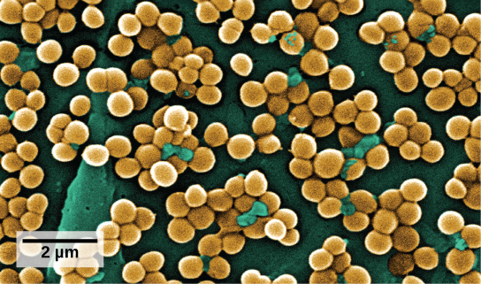
In summary, society is facing an antibiotic crisis. Some scientists believe that after years of being protected from bacterial infections by antibiotics, we may be returning to a time in which a simple bacterial infection could again devastate the human population. Researchers are working on developing new antibiotics, but few are in the drug development pipeline, and it takes many years to generate an effective and approved drug.
Prokaryotes are everywhere: They readily colonize the surface of any type of material, and food is not an exception. Outbreaks of bacterial infection related to food consumption are common. A foodborne disease (colloquially called "food poisoning") is an illness resulting from the consumption of food contaminated with pathogenic bacteria, viruses, or other parasites. Although the United States has one of the safest food supplies in the world, the Center for Disease Control and Prevention (CDC) has reported that "76 million people get sick, more than 300,000 are hospitalized, and 5,000 Americans die each year from foodborne illness."
The characteristics of foodborne illnesses have changed over time. In the past, it was relatively common to hear about sporadic cases of botulism, the potentially fatal disease produced by a toxin from the anaerobic bacterium Clostridium botulinum. A can, jar, or package created a suitable anaerobic environment where Clostridium could grow. Proper sterilization and canning procedures have reduced the incidence of this disease.
Most cases of foodborne illnesses are now linked to produce contaminated by animal waste. For example, there have been serious, produce-related outbreaks associated with raw spinach in the United States and with vegetable sprouts in Germany (Figure 13.8). The raw spinach outbreak in 2006 was produced by the bacterium E. coli strain O157:H7. Most E. coli strains are not particularly dangerous to humans, (indeed, they live in our large intestine), but O157:H7 is potentially fatal.
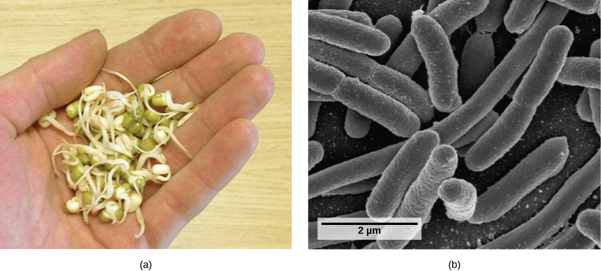
All types of food can potentially be contaminated with harmful bacteria of different species. Recent outbreaks of Salmonella reported by the CDC occurred in foods as diverse as peanut butter, alfalfa sprouts, and eggs.
Not all prokaryotes are pathogenic. On the contrary, pathogens represent only a very small percentage of the diversity of the microbial world. In fact, our life and all life on this planet would not be possible without prokaryotes.
According to the United Nations Convention on Biological Diversity, biotechnology is "any technological application that uses biological systems, living organisms, or derivatives thereof, to make or modify products or processes for specific use." The concept of "specific use" involves some sort of commercial application. Genetic engineering, artificial selection, antibiotic production, and cell culture are current topics of study in biotechnology. However, humans have used prokaryotes to create products before the term biotechnology was even coined. And some of the goods and services are as simple as cheese, yogurt, sour cream, vinegar, cured sausage, sauerkraut, and fermented seafood that contains both bacteria and archaea (Figure 13.9).
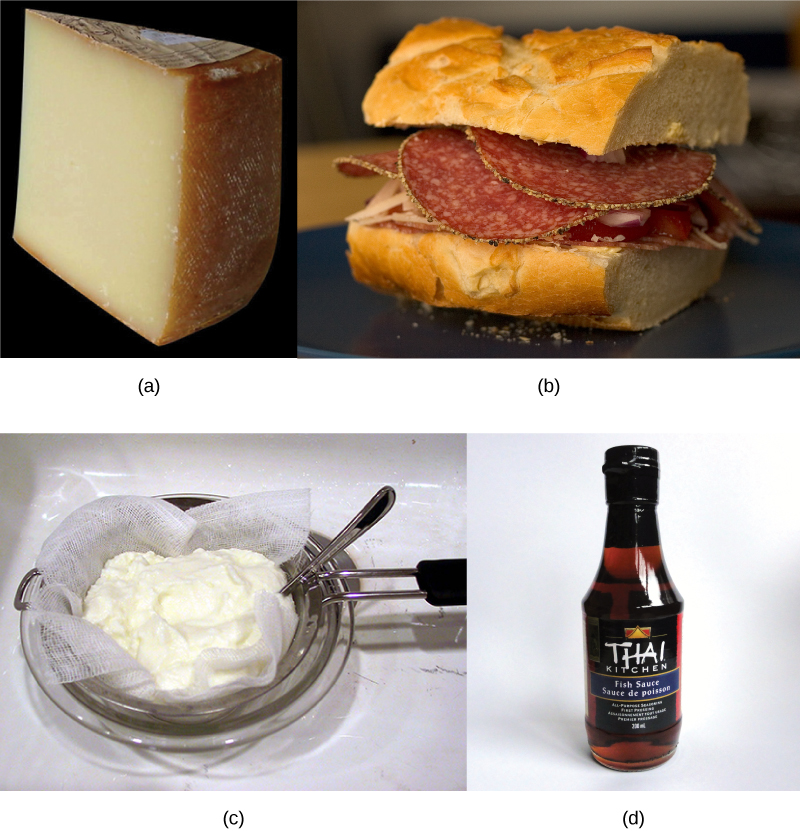
Cheese production began around 4,000 years ago when humans started to breed animals and process their milk. Evidence suggests that cultured milk products, like yogurt, have existed for at least 4,000 years.
Microbial bioremediation is the use of prokaryotes (or microbial metabolism) to remove pollutants. Bioremediation has been used to remove agricultural chemicals (pesticides and fertilizers) that leach from soil into groundwater. Certain toxic metals, such as selenium and arsenic compounds, can also be removed from water by bioremediation. Mercury is an example of a toxic metal that can be removed from an environment by bioremediation. Mercury is an active ingredient of some pesticides; it is used in industry and is also a byproduct of certain industries, such as battery production. Mercury is usually present in very low concentrations in natural environments but it is highly toxic because it accumulates in living tissues. Several species of bacteria can carry out the biotransformation of toxic mercury into nontoxic forms. These bacteria, such as Pseudomonas aeruginosa, can convert Hg2+ to Hg0, which is nontoxic to humans.
Probably one of the most useful and interesting examples of the use of prokaryotes for bioremediation purposes is the cleanup of oil spills. The importance of prokaryotes to petroleum bioremediation has been demonstrated in several oil spills in recent years, such as the Exxon Valdez spill in Alaska (1989) (Figure 13.10), the Prestige oil spill in Spain (2002), the spill into the Mediterranean from a Lebanon power plant (2006,) and more recently, the BP oil spill in the Gulf of Mexico (2010). To clean up these spills, bioremediation is promoted by adding inorganic nutrients that help bacteria already present in the environment to grow. Hydrocarbon-degrading bacteria feed on the hydrocarbons in the oil droplet, breaking them into inorganic compounds. Some species, such as Alcanivorax borkumensis, produce surfactants that solubilize the oil, while other bacteria degrade the oil into carbon dioxide. In the case of oil spills in the ocean, ongoing, natural bioremediation tends to occur, inasmuch as there are oil-consuming bacteria in the ocean prior to the spill. Under ideal conditions, it has been reported that up to 80 percent of the nonvolatile components in oil can be degraded within 1 year of the spill. Other oil fractions containing aromatic and highly branched hydrocarbon chains are more difficult to remove and remain in the environment for longer periods of time. Researchers have genetically engineered other bacteria to consume petroleum products; indeed, the first patent application for a bioremediation application in the U.S. was for a genetically modified oil-eating bacterium.
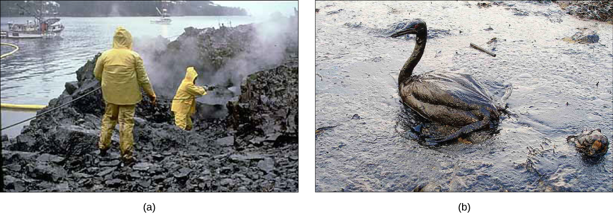
Humans are no exception when it comes to forming symbiotic relationships with prokaryotes. We are accustomed to thinking of ourselves as single organisms, but in reality, we are walking ecosystems. There are 10 to 100 times as many bacterial and archaeal cells inhabiting our bodies as we have cells in our bodies. Some of these are in mutually beneficial relationships with us, in which both the human host and the bacterium benefit, while some of the relationships are classified as commensalism, a type of relationship in which the bacterium benefits and the human host is neither benefited nor harmed.
Human gut flora lives in the large intestine and consists of hundreds of species of bacteria and archaea, with different individuals containing different species mixes. The term "flora," which is usually associated with plants, is traditionally used in this context because bacteria were once classified as plants. The primary functions of these prokaryotes for humans appear to be metabolism of food molecules that we cannot break down, assistance with the absorption of ions by the colon, synthesis of vitamin K, training of the infant immune system, maintenance of the adult immune system, maintenance of the epithelium of the large intestine, and formation of a protective barrier against pathogens.
The surface of the skin is also coated with prokaryotes. The different surfaces of the skin, such as the underarms, the head, and the hands, provide different habitats for different communities of prokaryotes. Unlike with gut flora, the possible beneficial roles of skin flora have not been well studied. However, the few studies conducted so far have identified bacteria that produce antimicrobial compounds as probably responsible for preventing infections by pathogenic bacteria.
As they would in any ecosystem, the organisms in the microbiome are subject to selection and evolution. Simply to survive through changes in the human body requires a degree of adaptability and resistance. Because humans and other animals (such as livestock) ingest more and more antibiotics, the bacteria within our bodies are becoming resistant to those medicines. Abigail A. Salyers, who provided much of the foundational research on the human microbiome, focused much of her early work on a type of bacteria (Bacteroides) that could not only become resistant to antibiotics, but pass on that resistance to surrounding bacteria. Salyers was among the first researchers to sound the alarm about the dangers of antibiotic resistance and its potential impact on health. Researchers are actively studying the relationships between various diseases and alterations to the composition of human microbial flora. Some of this work is being carried out by the Human Microbiome Project, funded in the United States by the National Institutes of Health.
Explain why antibiotic resistance is a growing concern, describing at least two causes. Then describe two ways that beneficial prokaryotes are used in biotechnology or bioremediation, using specific examples from the text.
- Describe the endosymbiotic theory
- Explain the origin of mitochondria and chloroplasts
The fossil record and genetic evidence suggest that prokaryotic cells were the first organisms on Earth. These cells originated approximately 3.5 billion years ago, which was about 1 billion years after Earth's formation, and were the only life forms on the planet until eukaryotic cells emerged approximately 2.1 billion years ago. During the prokaryotic reign, photosynthetic prokaryotes evolved that were capable of applying the energy from sunlight to synthesize organic materials (like carbohydrates) from carbon dioxide and an electron source (such as hydrogen, hydrogen sulfide, or water).
Photosynthesis using water as an electron donor consumes carbon dioxide and releases molecular oxygen (O2) as a byproduct. The functioning of photosynthetic bacteria over millions of years progressively saturated Earth's water with oxygen and then oxygenated the atmosphere, which previously contained much greater concentrations of carbon dioxide and much lower concentrations of oxygen. Older anaerobic prokaryotes of the era could not function in their new, aerobic environment. Some species perished, while others survived in the remaining anaerobic environments left on Earth. Still other early prokaryotes evolved mechanisms, such as aerobic respiration, to exploit the oxygenated atmosphere by using oxygen to store energy contained within organic molecules. Aerobic respiration is a more efficient way of obtaining energy from organic molecules, which contributed to the success of these species (as evidenced by the number and diversity of aerobic organisms living on Earth today). The evolution of aerobic prokaryotes was an important step toward the evolution of the first eukaryote, but several other distinguishing features had to evolve as well.
The origin of eukaryotic cells was largely a mystery until a revolutionary hypothesis was comprehensively examined in the 1960s by Lynn Margulis. The endosymbiotic theory states that eukaryotes are a product of one prokaryotic cell engulfing another, one living within another, and evolving together over time until the separate cells were no longer recognizable as such. This once-revolutionary hypothesis had immediate persuasiveness and is now widely accepted, with work progressing on uncovering the steps involved in this evolutionary process as well as the key players. It has become clear that many nuclear eukaryotic genes and the molecular machinery responsible for replicating and expressing those genes appear closely related to the Archaea. On the other hand, the metabolic organelles and the genes responsible for many energy-harvesting processes had their origins in bacteria. Much remains to be clarified about how this relationship occurred; this continues to be an exciting field of discovery in biology. Several endosymbiotic events likely contributed to the origin of the eukaryotic cell.
Eukaryotic cells may contain anywhere from one to several thousand mitochondria, depending on the cell's level of energy consumption. Each mitochondrion measures 1 to 10 micrometers in length and exists in the cell as a moving, fusing, and dividing oblong spheroid (Figure 13.11). However, mitochondria cannot survive outside the cell. As the atmosphere was oxygenated by photosynthesis, and as successful aerobic prokaryotes evolved, evidence suggests that an ancestral cell engulfed and kept alive a free-living, aerobic prokaryote. This gave the host cell the ability to use oxygen to release energy stored in nutrients. Several lines of evidence support that mitochondria are derived from this endosymbiotic event. Most mitochondria are shaped like a specific group of bacteria and are surrounded by two membranes. The mitochondrial inner membrane involves substantial infoldings or cristae that resemble the textured outer surface of certain bacteria.
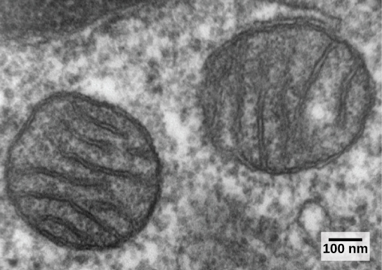
Mitochondria divide on their own by a process that resembles binary fission in prokaryotes. Mitochondria have their own circular DNA chromosome that carries genes similar to those expressed by bacteria. Mitochondria also have special ribosomes and transfer RNAs that resemble these components in prokaryotes. These features all support that mitochondria were once free-living prokaryotes.
Chloroplasts are one type of plastid, a group of related organelles in plant cells that are involved in the storage of starches, fats, proteins, and pigments. Chloroplasts contain the green pigment chlorophyll and play a role in photosynthesis. Genetic and morphological studies suggest that plastids evolved from the endosymbiosis of an ancestral cell that engulfed a photosynthetic cyanobacterium. Plastids are similar in size and shape to cyanobacteria and are enveloped by two or more membranes, corresponding to the inner and outer membranes of cyanobacteria. Like mitochondria, plastids also contain circular genomes and divide by a process reminiscent of prokaryotic cell division. The chloroplasts of red and green algae exhibit DNA sequences that are closely related to photosynthetic cyanobacteria, suggesting that red and green algae are direct descendants of this endosymbiotic event.
Mitochondria likely evolved before plastids because all eukaryotes have either functional mitochondria or mitochondria-like organelles. In contrast, plastids are only found in a subset of eukaryotes, such as terrestrial plants and algae. One hypothesis of the evolutionary steps leading to the first eukaryote is summarized in Figure 13.12.
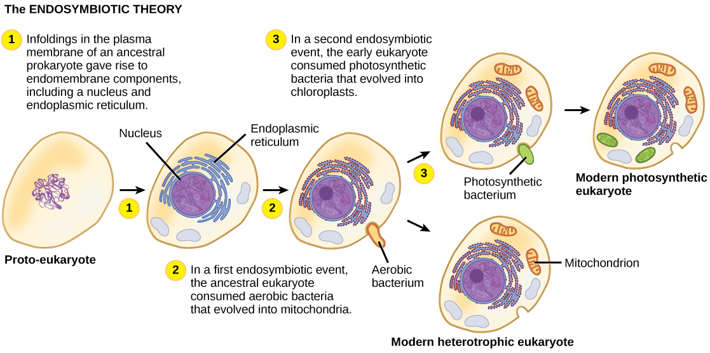
The exact steps leading to the first eukaryotic cell can only be hypothesized, and some controversy exists regarding which events actually took place and in what order. Spirochete bacteria have been hypothesized to have given rise to microtubules, and a flagellated prokaryote may have contributed the raw materials for eukaryotic flagella and cilia. Other scientists suggest that membrane proliferation and compartmentalization, not endosymbiotic events, led to the development of mitochondria and plastids. However, the vast majority of studies support the endosymbiotic hypothesis of eukaryotic evolution.
The early eukaryotes were unicellular like most protists are today, but as eukaryotes became more complex, the evolution of multicellularity allowed cells to remain small while still exhibiting specialized functions. The ancestors of today's multicellular eukaryotes are thought to have evolved about 1.5 billion years ago.
Describe the endosymbiotic theory, including who proposed it and what evidence supports it. Explain how mitochondria and chloroplasts are each thought to have originated, and list at least three lines of evidence that support the endosymbiotic origin of mitochondria.
- Describe the main characteristics of protists
- Describe important pathogenic species of protists
- Describe the roles of protists as food sources and as decomposers
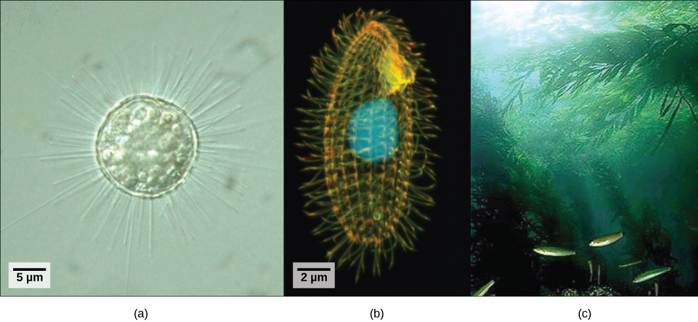
Eukaryotic organisms that did not fit the criteria for the kingdoms Animalia, Fungi, or Plantae historically were called protists and were classified into the kingdom Protista. Protists include the single-celled eukaryotes living in pond water (Figure 13.13), although protist species live in a variety of other aquatic and terrestrial environments, and occupy many different niches. Not all protists are microscopic and single-celled; there exist some very large multicellular species, such as the kelps. During the past two decades, the field of molecular genetics has demonstrated that some protists are more related to animals, plants, or fungi than they are to other protists. For this reason, protist lineages originally classified into the kingdom Protista have been reassigned into new kingdoms or other existing kingdoms. The evolutionary lineages of the protists continue to be examined and debated. In the meantime, the term "protist" still is used informally to describe this tremendously diverse group of eukaryotes. As a collective group, protists display an astounding diversity of morphologies, physiologies, and ecologies.
There are over 100,000 described living species of protists, and it is unclear how many undescribed species may exist. Since many protists live in symbiotic relationships with other organisms and these relationships are often species specific, there is a huge potential for undescribed protist diversity that matches the diversity of the hosts. As the catchall term for eukaryotic organisms that are not animals, plants, fungi, or any single phylogenetically related group, it is not surprising that few characteristics are common to all protists.
Nearly all protists exist in some type of aquatic environment, including freshwater and marine environments, damp soil, and even snow. Several protist species are parasites that infect animals or plants. A parasite is an organism that lives on or in another organism and feeds on it, often without killing it. A few protist species live on dead organisms or their wastes, and contribute to their decay.
The cells of protists are among the most elaborate of all cells. Most protists are microscopic and unicellular, but some true multicellular forms exist. A few protists live as colonies that behave in some ways as a group of free-living cells and in other ways as a multicellular organism. Still other protists are composed of enormous, multinucleate, single cells that look like amorphous blobs of slime or, in other cases, like ferns. In fact, many protist cells are multinucleated; in some species, the nuclei are different sizes and have distinct roles in protist cell function.
Single protist cells range in size from less than a micrometer to the 3-meter lengths of the multinucleate cells of the seaweed Caulerpa. Protist cells may be enveloped by animal-like cell membranes or plant-like cell walls. Others are encased in glassy silica-based shells or wound with pellicles of interlocking protein strips. The pellicle functions like a flexible coat of armor, preventing the protist from being torn or pierced without compromising its range of motion.
The majority of protists are motile, but different types of protists have evolved varied modes of movement. Some protists have one or more flagella, which they rotate or whip. Others are covered in rows or tufts of tiny cilia that they beat in coordination to swim. Still others send out lobe-like pseudopodia from anywhere on the cell, anchor the pseudopodium to a substrate, and pull the rest of the cell toward the anchor point. Some protists can move toward light by coupling their locomotion strategy with a light-sensing organ.
Protists exhibit many forms of nutrition and may be aerobic or anaerobic. Photosynthetic protists (photoautotrophs) are characterized by the presence of chloroplasts. Other protists are heterotrophs and consume organic materials (such as other organisms) to obtain nutrition. Amoebas and some other heterotrophic protist species ingest particles by a process called phagocytosis, in which the cell membrane engulfs a food particle and brings it inward, pinching off an intracellular membranous sac, or vesicle, called a food vacuole (Figure 13.14). This vesicle then fuses with a lysosome, and the food particle is broken down into small molecules that can diffuse into the cytoplasm and be used in cellular metabolism. Undigested remains ultimately are expelled from the cell through exocytosis.
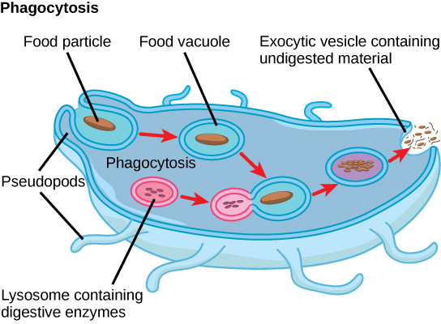
Some heterotrophs absorb nutrients from dead organisms or their organic wastes, and others are able to use photosynthesis or feed on organic matter, depending on conditions.
Protists reproduce by a variety of mechanisms. Most are capable some form of asexual reproduction, such as binary fission to produce two daughter cells, or multiple fission to divide simultaneously into many daughter cells. Others produce tiny buds that go on to divide and grow to the size of the parental protist. Sexual reproduction, involving meiosis and fertilization, is common among protists, and many protist species can switch from asexual to sexual reproduction when necessary. Sexual reproduction is often associated with periods when nutrients are depleted or environmental changes occur. Sexual reproduction may allow the protist to recombine genes and produce new variations of progeny that may be better suited to surviving in the new environment. However, sexual reproduction is also often associated with cysts that are a protective, resting stage. Depending on their habitat, the cysts may be particularly resistant to temperature extremes, desiccation, or low pH. This strategy also allows certain protists to "wait out" stressors until their environment becomes more favorable for survival or until they are carried (such as by wind, water, or transport on a larger organism) to a different environment because cysts exhibit virtually no cellular metabolism.
With the advent of DNA sequencing, the relationships among protist groups and between protist groups and other eukaryotes are beginning to become clearer. Many relationships that were based on morphological similarities are being replaced by new relationships based on genetic similarities. Protists that exhibit similar morphological features may have evolved analogous structures because of similar selective pressures—rather than because of recent common ancestry. This phenomenon is called convergent evolution. It is one reason why protist classification is so challenging. The emerging classification scheme groups the entire domain Eukaryota into six "supergroups" that contain all of the protists as well as animals, plants, and fungi (Figure 13.15); these include the Excavata, Chromalveolata, Rhizaria, Archaeplastida, Amoebozoa, and Opisthokonta. The supergroups are believed to be monophyletic; all organisms within each supergroup are believed to have evolved from a single common ancestor, and thus all members are most closely related to each other than to organisms outside that group. There is still evidence lacking for the monophyly of some groups.
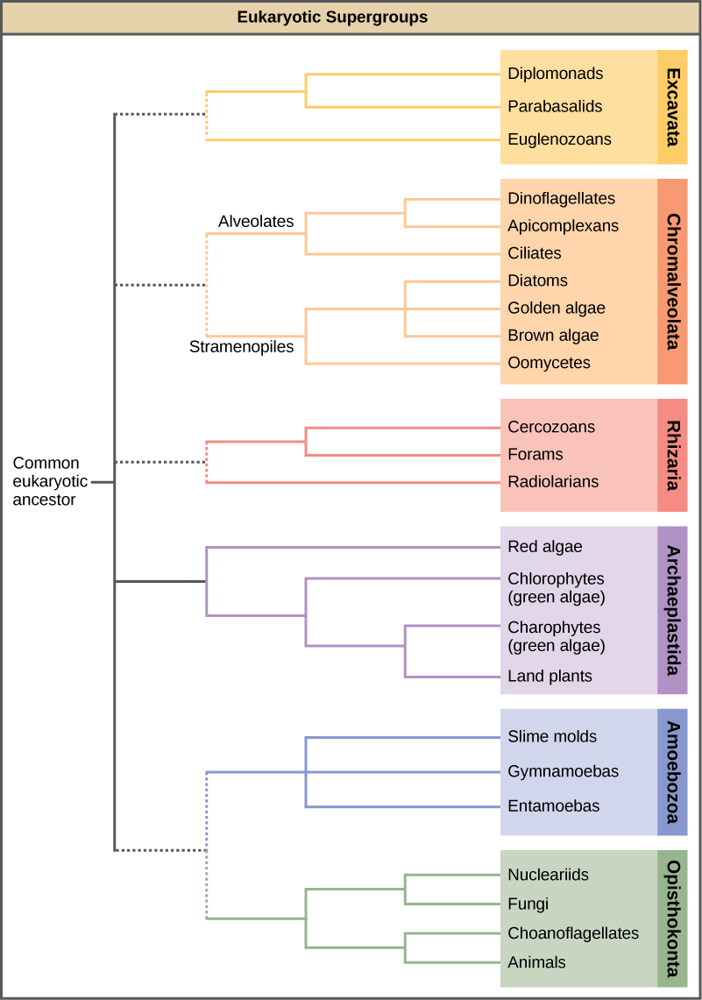
Many protists are pathogenic parasites that must infect other organisms to survive and propagate. Protist parasites include the causative agents of malaria, African sleeping sickness, and waterborne gastroenteritis in humans. Other protist pathogens prey on plants, effecting massive destruction of food crops.
Members of the genus Plasmodium must infect a mosquito and a vertebrate to complete their life cycle. In vertebrates, the parasite develops in liver cells and goes on to infect red blood cells, bursting from and destroying the blood cells with each asexual replication cycle (Figure 13.16). Of the four Plasmodium species known to infect humans, P. falciparum accounts for 50 percent of all malaria cases and is the primary cause of disease-related fatalities in tropical regions of the world. In 2010, it was estimated that malaria caused between 0.5 and 1 million deaths, mostly in African children. During the course of malaria, P. falciparum can infect and destroy more than one-half of a human's circulating blood cells, leading to severe anemia. In response to waste products released as the parasites burst from infected blood cells, the host immune system mounts a massive inflammatory response with delirium-inducing fever episodes, as parasites destroy red blood cells, spilling parasite waste into the blood stream. P. falciparum is transmitted to humans by the African malaria mosquito, Anopheles gambiae. Techniques to kill, sterilize, or avoid exposure to this highly aggressive mosquito species are crucial to malaria control.
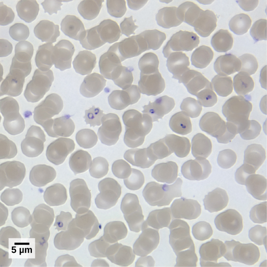
T. brucei, the parasite that is responsible for African sleeping sickness, confounds the human immune system by changing its thick layer of surface glycoproteins with each infectious cycle (Figure 13.17). The glycoproteins are identified by the immune system as foreign matter, and a specific antibody defense is mounted against the parasite. However, T. brucei has thousands of possible antigens, and with each subsequent generation, the protist switches to a glycoprotein coating with a different molecular structure. In this way, T. brucei is capable of replicating continuously without the immune system ever succeeding in clearing the parasite. Without treatment, African sleeping sickness leads invariably to death because of damage it does to the nervous system. During epidemic periods, mortality from the disease can be high. Greater surveillance and control measures have led to a reduction in reported cases; some of the lowest numbers reported in 50 years (fewer than 10,000 cases in all of sub-Saharan Africa) have happened since 2009.
In Latin America, another species in the genus, T. cruzi, is responsible for Chagas disease. T. cruzi infections are mainly caused by a blood-sucking bug. The parasite inhabits heart and digestive system tissues in the chronic phase of infection, leading to malnutrition and heart failure caused by abnormal heart rhythms. An estimated 10 million people are infected with Chagas disease, which caused 10,000 deaths in 2008.
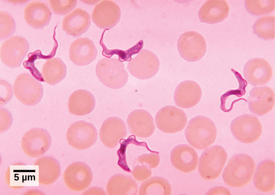
Protist parasites of terrestrial plants include agents that destroy food crops. The oomycete Plasmopara viticola parasitizes grape plants, causing a disease called downy mildew (Figure 13.18a). Grape plants infected with P. viticola appear stunted and have discolored withered leaves. The spread of downy mildew caused the near collapse of the French wine industry in the nineteenth century.
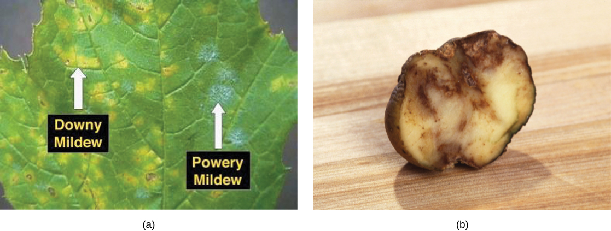
Phytophthora infestans is an oomycete responsible for potato late blight, which causes potato stalks and stems to decay into black slime (Figure 13.18b). Widespread potato blight caused by P. infestans precipitated the well-known Irish potato famine in the nineteenth century that claimed the lives of approximately 1 million people and led to the emigration from Ireland of at least 1 million more. Late blight continues to plague potato crops in certain parts of the United States and Russia, wiping out as much as 70 percent of crops when no pesticides are applied.
Protists play critically important ecological roles as producers particularly in the world's oceans. They are equally important on the other end of food webs as decomposers.
Protists are essential sources of nutrition for many other organisms. In some cases, as in plankton, protists are consumed directly. Alternatively, photosynthetic protists serve as producers of nutrition for other organisms by carbon fixation. For instance, photosynthetic dinoflagellates called zooxanthellae pass on most of their energy to the coral polyps that house them (Figure 13.19). In this mutually beneficial relationship, the polyps provide a protective environment and nutrients for the zooxanthellae. The polyps secrete the calcium carbonate that builds coral reefs. Without dinoflagellate symbionts, corals lose algal pigments in a process called coral bleaching, and they eventually die. This explains why reef-building corals do not reside in waters deeper than 20 meters: Not enough light reaches those depths for dinoflagellates to photosynthesize.
Protists themselves and their products of photosynthesis are essential—directly or indirectly—to the survival of organisms ranging from bacteria to mammals. As primary producers, protists feed a large proportion of the world's aquatic species. (On land, terrestrial plants serve as primary producers.) In fact, approximately one-quarter of the world's photosynthesis is conducted by protists, particularly dinoflagellates, diatoms, and multicellular algae.
Protists do not create food sources only for sea-dwelling organisms. For instance, certain anaerobic species exist in the digestive tracts of termites and wood-eating cockroaches, where they contribute to digesting cellulose ingested by these insects as they bore through wood. The actual enzyme used to digest the cellulose is actually produced by bacteria living within the protist cells. The termite provides the food source to the protist and its bacteria, and the protist and bacteria provide nutrients to the termite by breaking down the cellulose.
Many fungus-like protists are saprobes, organisms that feed on dead organisms or the waste matter produced by organisms (saprophyte is an equivalent term), and are specialized to absorb nutrients from nonliving organic matter. For instance, many types of oomycetes grow on dead animals or algae. Saprobic protists have the essential function of returning inorganic nutrients to the soil and water. This process allows for new plant growth, which in turn generates sustenance for other organisms along the food chain. Indeed, without saprobic species, such as protists, fungi, and bacteria, life would cease to exist as all organic carbon became "tied up" in dead organisms.
Describe the main characteristics of protists, including their diversity of cell structures, nutritional modes, and habitats. Explain why protists are not considered a monophyletic group and how the six eukaryotic supergroups attempt to classify them. Include at least one example of a pathogenic protist and one example of a beneficial protist role.
- List the characteristics of fungi
- Describe fungal parasites and pathogens of plants and infections in humans
- Describe the importance of fungi to the environment
- Summarize the beneficial role of fungi in food and beverage preparation and in the chemical and pharmaceutical industry
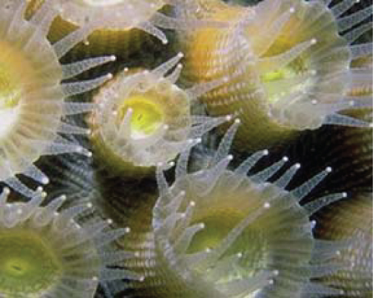
The word fungus comes from the Latin word for mushroom. Indeed, the familiar mushrooms are fungi, but there are many other types of fungi as well (Figure 13.20). The kingdom Fungi includes an enormous variety of living organisms. While scientists have identified about 135,000 species of fungi, this is only a fraction of the more than 1.5 million species of fungus likely present on Earth. Edible mushrooms, yeasts, black mold, and Penicillium notatum (the producer of the antibiotic penicillin) are all members of the kingdom Fungi, which belongs to the domain Eukarya. As eukaryotes, a typical fungal cell contains a true nucleus and many membrane-bound organelles.
Fungi were once considered plant-like organisms; however, DNA comparisons have shown that fungi are more closely related to animals than plants. Fungi are not capable of photosynthesis: They use complex organic compounds as sources of energy and carbon. Some fungal organisms multiply only asexually, whereas others undergo both asexual reproduction and sexual reproduction. Most fungi produce a large number of spores that are disseminated by the wind. Like bacteria, fungi play an essential role in ecosystems, because they are decomposers and participate in the cycling of nutrients by breaking down organic materials into simple molecules.
Fungi often interact with other organisms, forming mutually beneficial or mutualistic associations. Fungi also cause serious infections in plants and animals. For example, Dutch elm disease is a particularly devastating fungal infection that destroys many native species of elm (Ulmus spp.). The fungus infects the vascular system of the tree. It was accidentally introduced to North America in the 1900s and decimated elm trees across the continent. Dutch elm disease is caused by the fungus Ophiostoma ulmi. The elm bark beetle acts as a vector and transmits the disease from tree to tree. Many European and Asiatic elms are less susceptible than American elms.
In humans, fungal infections are generally considered challenging to treat because, unlike bacteria, they do not respond to traditional antibiotic therapy since they are also eukaryotes. These infections may prove deadly for individuals with a compromised immune system.
Fungi have many commercial applications. The food industry uses yeasts in baking, brewing, and wine making. Many industrial compounds are byproducts of fungal fermentation. Fungi are the source of many commercial enzymes and antibiotics.
Fungi are eukaryotes and as such have a complex cellular organization. As eukaryotes, fungal cells contain a membrane-bound nucleus. A few types of fungi have structures comparable to the plasmids (loops of DNA) seen in bacteria. Fungal cells also contain mitochondria and a complex system of internal membranes, including the endoplasmic reticulum and Golgi apparatus.
Fungal cells do not have chloroplasts. Although the photosynthetic pigment chlorophyll is absent, many fungi display bright colors, ranging from red to green to black. The poisonous Amanita muscaria (fly agaric) is recognizable by its bright red cap with white patches (Figure 13.21). Pigments in fungi are associated with the cell wall and play a protective role against ultraviolet radiation. Some pigments are toxic.
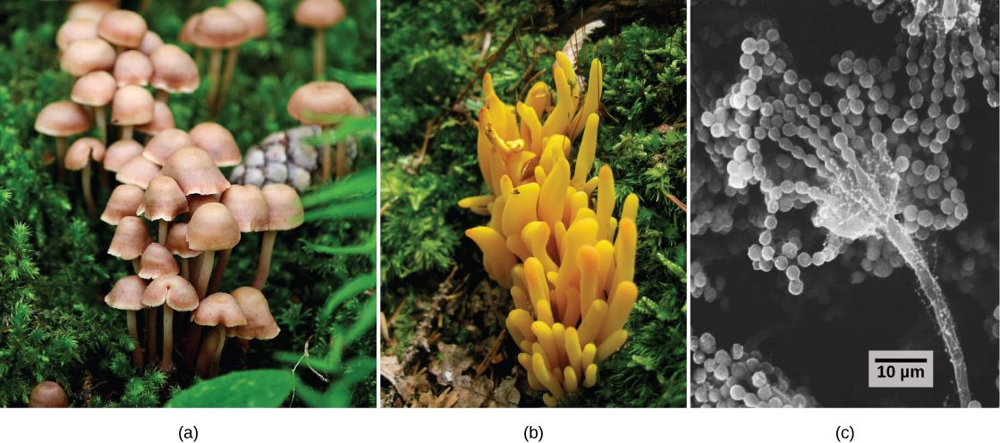
Like plant cells, fungal cells are surrounded by a thick cell wall; however, the rigid layers contain the complex polysaccharides chitin and glucan and not cellulose that is used by plants. Chitin, also found in the exoskeleton of insects, gives structural strength to the cell walls of fungi. The wall provides structural support and protects the cell from desiccation and some predators. Fungi have plasma membranes similar to other eukaryotes, except that the structure is stabilized by ergosterol, a steroid molecule that functions like the cholesterol found in animal cell membranes. Most members of the kingdom Fungi are nonmotile. Flagella are produced only by the gametes in the primitive division Chytridiomycota.
The vegetative body of a fungus is called a thallus and can be unicellular or multicellular. Some fungi are dimorphic because they can go from being unicellular to multicellular depending on environmental conditions. Unicellular fungi are generally referred to as yeasts. Saccharomyces cerevisiae (baker's yeast) and Candida species (the agents of thrush, a common fungal infection) are examples of unicellular fungi.
Most fungi are multicellular organisms. They display two distinct morphological stages: vegetative and reproductive. The vegetative stage is characterized by a tangle of slender thread-like structures called hyphae (singular, hypha), whereas the reproductive stage can be more conspicuous. A mass of hyphae is called a mycelium (Figure 13.22). It can grow on a surface, in soil or decaying material, in a liquid, or even in or on living tissue. Although individual hypha must be observed under a microscope, the mycelium of a fungus can be very large with some species truly being "the fungus humongous." The giant Armillaria ostoyae (honey mushroom) is considered the largest organism on Earth, spreading across over 2,000 acres of underground soil in eastern Oregon; it is estimated to be at least 2,400 years old.
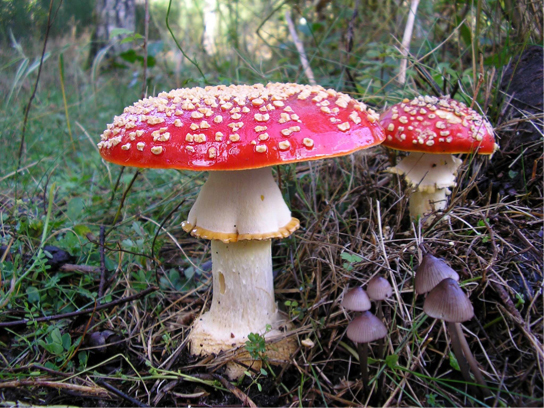
Most fungal hyphae are divided into separate cells by end walls called septa (singular, septum). In most divisions (like plants, fungal phyla are called divisions by tradition) of fungi, tiny holes in the septa allow for the rapid flow of nutrients and small molecules from cell to cell along the hyphae. They are described as perforated septa. The hyphae in bread molds (which belong to the division Zygomycota) are not separated by septa. They are formed of large cells containing many nuclei, an arrangement described as coenocytic hyphae.
Fungi thrive in environments that are moist and slightly acidic, and can grow in dark places or places exposed to light. They vary in their oxygen requirements. Most fungi are obligate aerobes, requiring oxygen to survive. Other species, such as the Chytridiomycota that reside in the rumen of cattle, are obligate anaerobes, meaning that they cannot grow and reproduce in an environment with oxygen. Yeasts are intermediate: They grow best in the presence of oxygen but can use fermentation in the absence of oxygen. The alcohol produced from yeast fermentation is used in wine and beer production, and the carbon dioxide they produce carbonates beer and sparkling wine, and makes bread rise.
The reproductive stage could be sexual or asexual. In both sexual and asexual reproduction, fungi produce spores that disperse from the parent organism by either floating in the wind or hitching a ride on an animal. Fungal spores are smaller and lighter than plant seeds, but they are not usually released as high in the air. The giant puffball mushroom bursts open and releases trillions of spores: The huge number of spores released increases the likelihood of spores landing in an environment that will support growth (Figure 13.23).
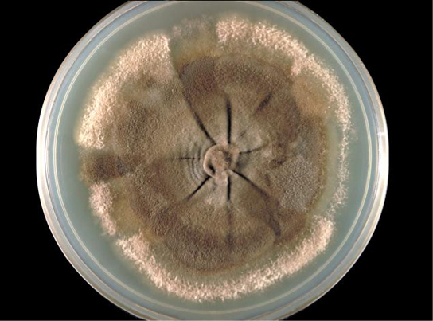
Like animals, fungi are heterotrophs: They use complex organic compounds as a source of carbon rather than fixing carbon dioxide from the atmosphere, as some bacteria and most plants do. In addition, fungi do not fix nitrogen from the atmosphere. Like animals, they must obtain it from their diet. However, unlike most animals that ingest food and then digest it internally in specialized organs, fungi perform these steps in the reverse order. Digestion precedes ingestion. First, exoenzymes, enzymes that catalyze reactions on compounds outside of the cell, are transported out of the hyphae where they break down nutrients in the environment. Then, the smaller molecules produced by the external digestion are absorbed through the large surface areas of the mycelium. As with animal cells, the fungal storage polysaccharide is glycogen rather than starch, as found in plants.
Fungi are mostly saprobes, organisms that derive nutrients from decaying organic matter. They obtain their nutrients from dead or decomposing organic matter, mainly plant material. Fungal exoenzymes are able to break down insoluble polysaccharides, such as the cellulose and lignin of dead wood, into readily absorbable glucose molecules. Decomposers are important components of ecosystems, because they return nutrients locked in dead bodies to a form that is usable for other organisms. This role is discussed in more detail later. Because of their varied metabolic pathways, fungi fulfill an important ecological role and are being investigated as potential tools in bioremediation. For example, some species of fungi can be used to break down diesel oil and polycyclic aromatic hydrocarbons. Other species take up heavy metals such as cadmium and lead.
The kingdom Fungi contains four major divisions that were established according to their mode of sexual reproduction. Polyphyletic, unrelated fungi that reproduce without a sexual cycle, are placed for convenience in a fifth division, and a sixth major fungal group that does not fit well with any of the previous five has recently been described. Not all mycologists agree with this scheme. Rapid advances in molecular biology and the sequencing of 18S rRNA (a component of ribosomes) continue to reveal new and different relationships between the various categories of fungi.
The traditional divisions of Fungi are the Chytridiomycota (chytrids), the Zygomycota (conjugated fungi), the Ascomycota (sac fungi), and the Basidiomycota (club fungi). An older classification scheme grouped fungi that strictly use asexual reproduction into Deuteromycota, a group that is no longer in use. The Glomeromycota belong to a newly described group (Figure 13.24).
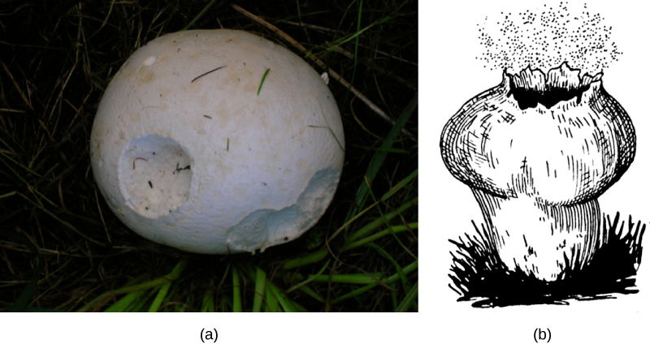
Many fungi have negative impacts on other species, including humans and the organisms they depend on for food. Fungi may be parasites, pathogens, and, in a very few cases, predators.
The production of enough good-quality crops is essential to our existence. Plant diseases have ruined crops, bringing widespread famine. Most plant pathogens are fungi that cause tissue decay and eventual death of the host (Figure 13.25). In addition to destroying plant tissue directly, some plant pathogens spoil crops by producing potent toxins. Fungi are also responsible for food spoilage and the rotting of stored crops. For example, the fungus Claviceps purpurea causes ergot, a disease of cereal crops (especially of rye). Although the fungus reduces the yield of cereals, the effects of the ergot's alkaloid toxins on humans and animals are of much greater significance: In animals, the disease is referred to as ergotism. The most common signs and symptoms are convulsions, hallucination, gangrene, and loss of milk in cattle. The active ingredient of ergot is lysergic acid, which is a precursor of the drug LSD. Smuts, rusts, and powdery or downy mildew are other examples of common fungal pathogens that affect crops.
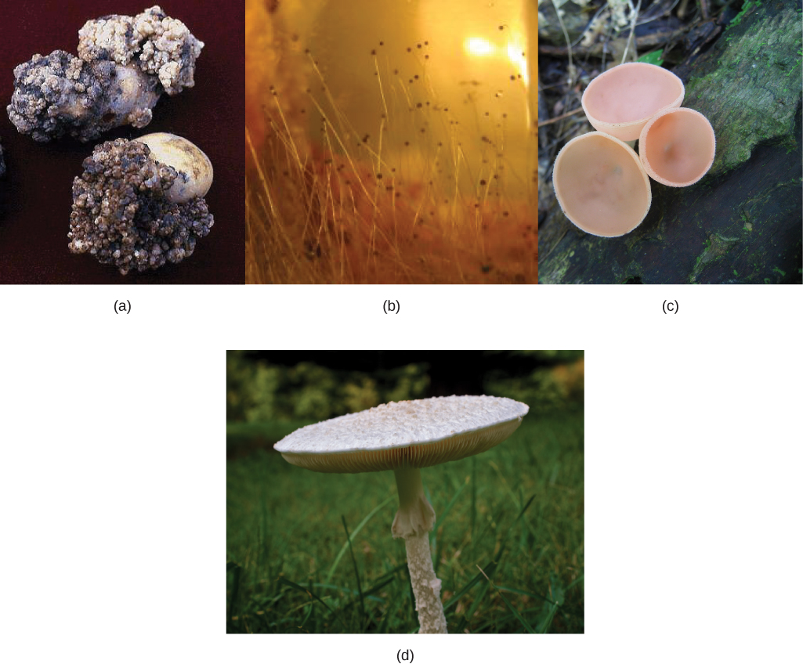
Aflatoxins are toxic and carcinogenic compounds released by fungi of the genus Aspergillus. Periodically, harvests of nuts and grains are tainted by aflatoxins, leading to massive recall of produce, sometimes ruining producers, and causing food shortages in developing countries.
Fungi can affect animals, including humans, in several ways. Fungi attack animals directly by colonizing and destroying tissues. Humans and other animals can be poisoned by eating toxic mushrooms or foods contaminated by fungi. In addition, individuals who display hypersensitivity to molds and spores develop strong and dangerous allergic reactions. Fungal infections are generally very difficult to treat because, unlike bacteria, fungi are eukaryotes. Antibiotics only target prokaryotic cells, whereas compounds that kill fungi also adversely affect the eukaryotic animal host.
Many fungal infections (mycoses) are superficial and termed cutaneous (meaning "skin") mycoses. They are usually visible on the skin of the animal. Fungi that cause the superficial mycoses of the epidermis, hair, and nails rarely spread to the underlying tissue (Figure 13.26). These fungi are often misnamed "dermatophytes" from the Greek dermis skin and phyte plant, but they are not plants. Dermatophytes are also called "ringworms" because of the red ring that they cause on skin (although the ring is caused by fungi, not a worm). These fungi secrete extracellular enzymes that break down keratin (a protein found in hair, skin, and nails), causing a number of conditions such as athlete's foot, jock itch, and other cutaneous fungal infections. These conditions are usually treated with over-the-counter topical creams and powders, and are easily cleared. More persistent, superficial mycoses may require prescription oral medications.
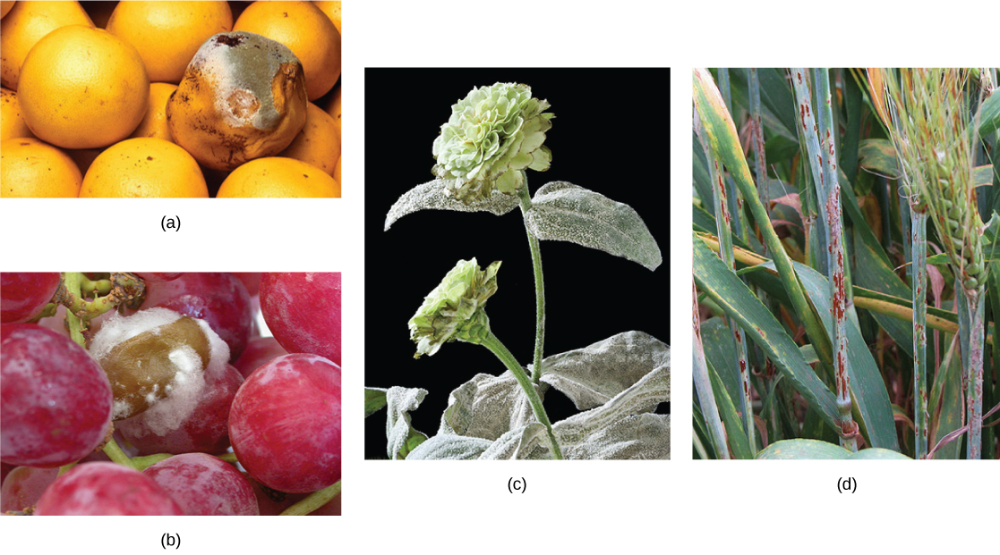
Systemic mycoses spread to internal organs, most commonly entering the body through the respiratory system. For example, coccidioidomycosis (valley fever) is commonly found in the southwestern United States, where the fungus resides in the dust. Once inhaled, the spores develop in the lungs and cause signs and symptoms similar to those of tuberculosis. Histoplasmosis (Figure 13.26c) is caused by the dimorphic fungus Histoplasma capsulatum; it causes pulmonary infections and, in rare cases, swelling of the membranes of the brain and spinal cord. Treatment of many fungal diseases requires the use of antifungal medications that have serious side effects.
Opportunistic mycoses are fungal infections that are either common in all environments or part of the normal biota. They affect mainly individuals who have a compromised immune system. Patients in the late stages of AIDS suffer from opportunistic mycoses, such as Pneumocystis, which can be life threatening. The yeast Candida spp., which is a common member of the natural biota, can grow unchecked if the pH, the immune defenses, or the normal population of bacteria is altered, causing yeast infections of the vagina or mouth (oral thrush).
Fungi may even take on a predatory lifestyle. In soil environments that are poor in nitrogen, some fungi resort to predation of nematodes (small roundworms). Species of Arthrobotrys fungi have a number of mechanisms to trap nematodes. For example, they have constricting rings within their network of hyphae. The rings swell when the nematode touches it and closes around the body of the nematode, thus trapping it. The fungus extends specialized hyphae that can penetrate the body of the worm and slowly digest the hapless prey.
Fungi play a crucial role in the balance of ecosystems. They colonize most habitats on Earth, preferring dark, moist conditions. They can thrive in seemingly hostile environments, such as the tundra, thanks to a most successful symbiosis with photosynthetic organisms, like lichens. Fungi are not obvious in the way that large animals or tall trees are. Yet, like bacteria, they are major decomposers of nature. With their versatile metabolism, fungi break down organic matter that is insoluble and would not be recycled otherwise.
Food webs would be incomplete without organisms that decompose organic matter and fungi are key participants in this process. Decomposition allows for cycling of nutrients such as carbon, nitrogen, and phosphorus back into the environment so they are available to living things, rather than being trapped in dead organisms. Fungi are particularly important because they have evolved enzymes to break down cellulose and lignin, components of plant cell walls that few other organisms are able to digest, releasing their carbon content.
Fungi are also involved in ecologically important coevolved symbioses, both mutually beneficial and pathogenic with organisms from the other kingdoms. Mycorrhiza, a term combining the Greek roots myco meaning fungus and rhizo meaning root, refers to the association between vascular plant roots and their symbiotic fungi. Somewhere between 80–90 percent of all plant species have mycorrhizal partners. In a mycorrhizal association, the fungal mycelia use their extensive network of hyphae and large surface area in contact with the soil to channel water and minerals from the soil into the plant. In exchange, the plant supplies the products of photosynthesis to fuel the metabolism of the fungus. Ectomycorrhizae ("outside" mycorrhiza) depend on fungi enveloping the roots in a sheath (called a mantle) and a net of hyphae that extends into the roots between cells. In a second type, the Glomeromycota fungi form arbuscular mycorrhiza. In these mycorrhiza, the fungi form arbuscles, a specialized highly branched hypha, which penetrate root cells and are the sites of the metabolic exchanges between the fungus and the host plant. Orchids rely on a third type of mycorrhiza. Orchids form small seeds without much storage to sustain germination and growth. Their seeds will not germinate without a mycorrhizal partner (usually Basidiomycota). After nutrients in the seed are depleted, fungal symbionts support the growth of the orchid by providing necessary carbohydrates and minerals. Some orchids continue to be mycorrhizal throughout their lifecycle.
Lichens blanket many rocks and tree bark, displaying a range of colors and textures. Lichens are important pioneer organisms that colonize rock surfaces in otherwise lifeless environments such as are created by glacial recession. The lichen is able to leach nutrients from the rocks and break them down in the first step to creating soil. Lichens are also present in mature habitats on rock surfaces or the trunks of trees. They are an important food source for caribou. Lichens are not a single organism, but rather a fungus (usually an Ascomycota or Basidiomycota species) living in close contact with a photosynthetic organism (an alga or cyanobacterium). The body of a lichen, referred to as a thallus, is formed of hyphae wrapped around the green partner. The photosynthetic organism provides carbon and energy in the form of carbohydrates and receives protection from the elements by the thallus of the fungal partner. Some cyanobacteria fix nitrogen from the atmosphere, contributing nitrogenous compounds to the association. In return, the fungus supplies minerals and protection from dryness and excessive light by encasing the algae in its mycelium. The fungus also attaches the symbiotic organism to the substrate.
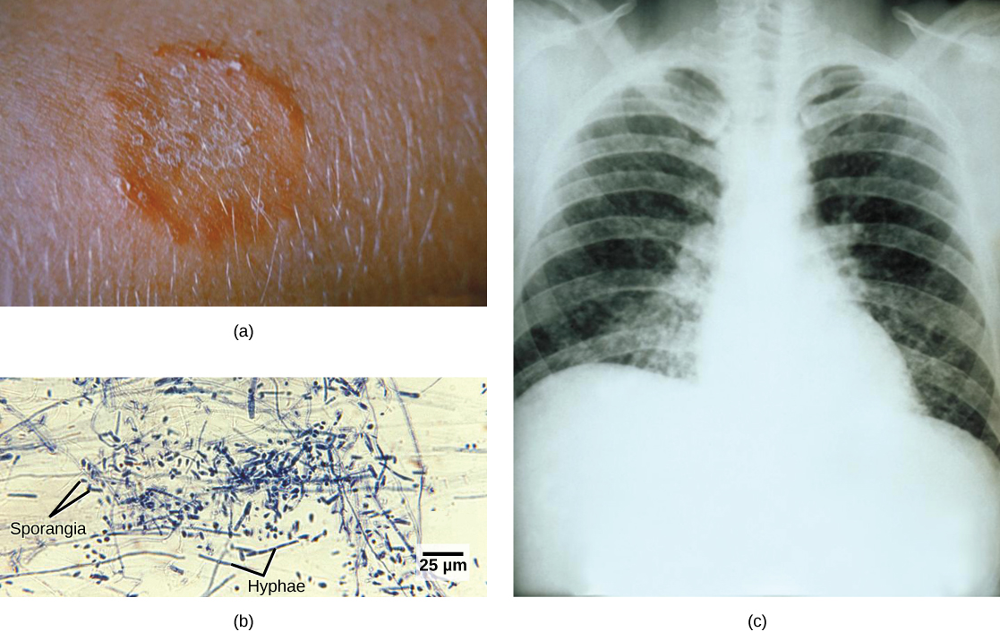
Fungi have evolved mutualistic associations with numerous arthropods. The association between species of Basidiomycota and scale insects is one example. The fungal mycelium covers and protects the insect colonies. The scale insects foster a flow of nutrients from the parasitized plant to the fungus. In a second example, leaf-cutting ants of Central and South America literally farm fungi. They cut disks of leaves from plants and pile them up in gardens. Fungi are cultivated in these gardens, digesting the cellulose that the ants cannot break down. Once smaller sugar molecules are produced and consumed by the fungi, they in turn become a meal for the ants. The insects also patrol their garden, preying on competing fungi. Both ants and fungi benefit from the association. The fungus receives a steady supply of leaves and freedom from competition, while the ants feed on the fungi they cultivate.
Although we often think of fungi as organisms that cause diseases and rot food, fungi are important to human life on many levels. As we have seen, they influence the well-being of human populations on a large scale because they help nutrients cycle in ecosystems. They have other ecosystem roles as well. For example, as animal pathogens, fungi help to control the population of damaging pests. These fungi are very specific to the insects they attack and do not infect other animals or plants. The potential to use fungi as microbial insecticides is being investigated, with several species already on the market. For example, the fungus Beauveria bassiana is a pesticide that is currently being tested as a possible biological control for the recent spread of emerald ash borer. It has been released in Michigan, Illinois, Indiana, Ohio, West Virginia, and Maryland.
The mycorrhizal relationship between fungi and plant roots is essential for the productivity of farmland. Without the fungal partner in the root systems, 80–90% of trees and grasses would not survive. Mycorrhizal fungal inoculants are available as soil amendments from gardening supply stores and are promoted by supporters of organic agriculture, but there is little evidence as to the effectiveness.
We also eat some types of fungi. Mushrooms figure prominently in the human diet. Morels, shiitake mushrooms, chanterelles, and truffles are considered delicacies (Figure 13.27). The humble meadow mushroom, Agaricus campestris, appears in many dishes. Molds of the genus Penicillium ripen many cheeses. They originate in the natural environment such as the caves of Roquefort, France, where wheels of sheep milk cheese are stacked to capture the molds responsible for the blue veins and pungent taste of the cheese.
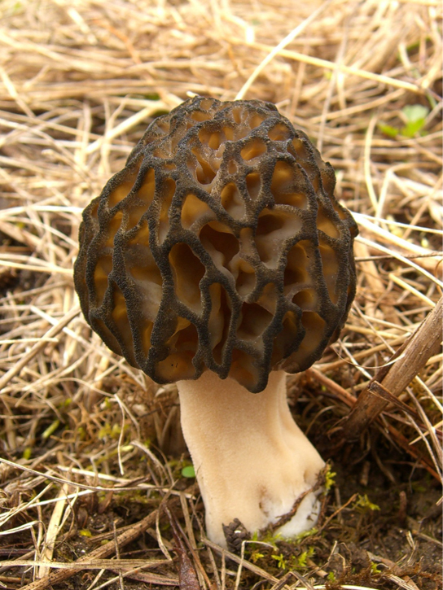
Fermentation—of grains to produce beer, and of fruits to produce wine—is an ancient art that humans in most cultures have practiced for millennia. Wild yeasts are acquired from the environment and used to ferment sugars into CO2 and ethyl alcohol under anaerobic conditions. It is now possible to purchase isolated strains of wild yeasts from different wine-making regions. Pasteur was instrumental in developing a reliable strain of brewer's yeast, Saccharomyces cerevisiae, for the French brewing industry in the late 1850s. It was one of the first examples of biotechnology patenting. Yeast is also used to make breads that rise. The carbon dioxide they produce is responsible for the bubbles produced in the dough that become the air pockets of the baked bread.
Many secondary metabolites of fungi are of great commercial importance. Antibiotics are naturally produced by fungi to kill or inhibit the growth of bacteria, and limit competition in the natural environment. Valuable drugs isolated from fungi include the immunosuppressant drug cyclosporine (which reduces the risk of rejection after organ transplant), the precursors of steroid hormones, and ergot alkaloids used to stop bleeding. In addition, as easily cultured eukaryotic organisms, some fungi are important model research organisms including the red bread mold Neurospora crassa and the yeast, S. cerevisiae.
Describe the key characteristics of fungi, including their cell structure, how they obtain nutrition, and their modes of reproduction. Explain the ecological importance of fungi as decomposers, and describe at least one mutualistic relationship (such as mycorrhizae or lichens). Finally, give an example of how fungi are both harmful (as pathogens) and beneficial (in food, medicine, or industry) to humans.
- Prokaryotic diversity (structure, Gram staining, extremophiles, biofilms, MRSA, bioremediation, beneficial prokaryotes) — CB 13.1
- Eukaryotic origins (endosymbiotic theory, mitochondria, chloroplasts) — CB 13.2
- Protists (characteristics, supergroups, malaria, trypanosomes, beneficial protists) — CB 13.3
- Fungi (cell structure, hyphae, spores, classification, mycorrhizae, lichens, pathogenic and beneficial fungi) — CB 13.4